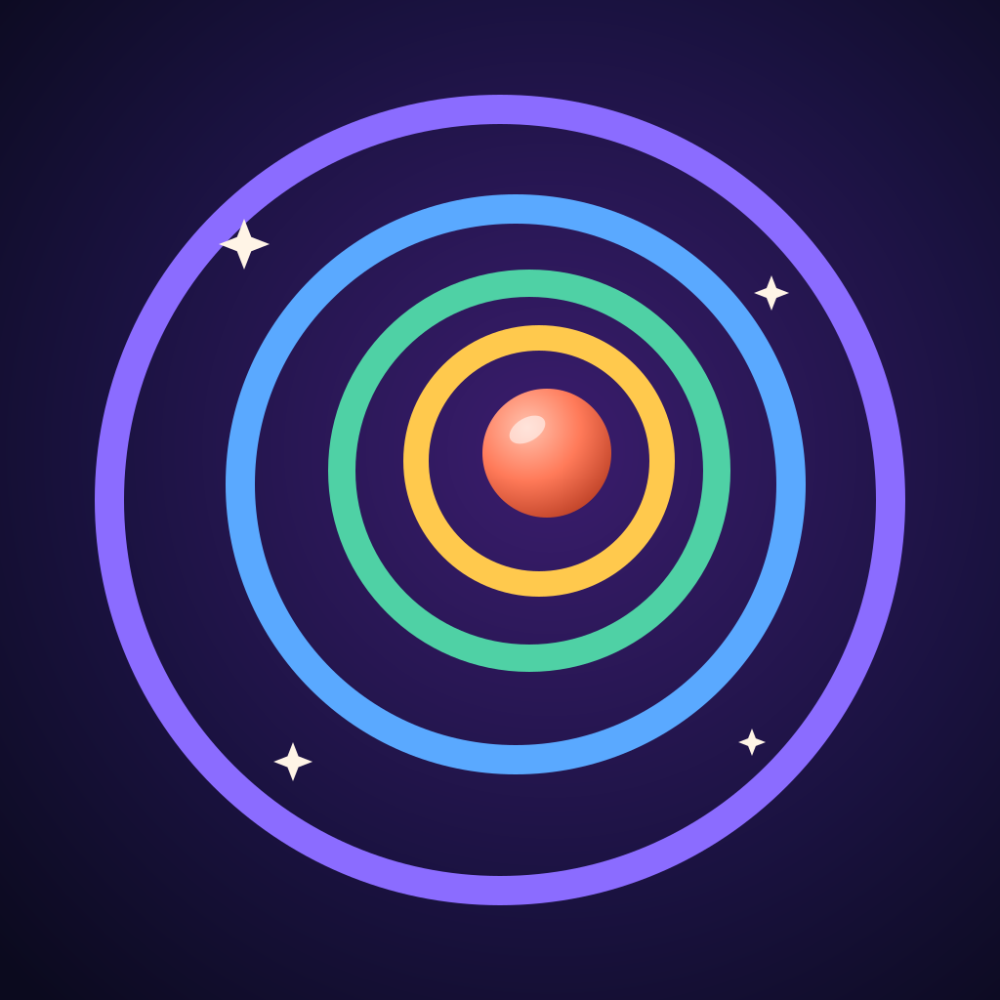

Zoomverse
Tiny to infinite: 51 scales, from strings to the multiverse
Need help? 👋
Hi, I'm Alex, the developer of Zoomverse. If something isn't working, you spotted a mistake in a fact, or you have an idea, write to me. I read every message.
alexandre.bruffa@gmail.comFrequently asked questions
How do I move between scales?
Swipe left to go to bigger things and right to go to smaller ones. You can also tap or drag the ruler at the bottom to jump anywhere. On a Mac, use the ← → arrow keys, your mouse wheel or a two-finger swipe on the trackpad. "Home" brings you back to "You are here".
Is Zoomverse free?
Yes, completely: every screen and feature is free, with no ads. If you enjoy it, you can leave an optional tip from the Support screen (the heart button). Tips don't unlock anything.
I left a tip on a new phone and the app still asks for support
That's normal. Tips are one-time thank-yous and the app only remembers them on the device where you gave them. There is nothing to restore, and nothing in the app is locked.
What do the badges "Hypothesis" and "Inferred" mean?
Most screens show things that have been measured. A few show ideas science hasn't confirmed yet (strings, the unification of forces, the multiverse) or things known only indirectly (the Oort cloud). The badge tells you which is which.
I don't feel the small vibration
The tick when a new scale appears uses your phone's system haptics. Check that system haptics (iPhone) or touch vibration (Android) is on in your phone's settings. iPads and Macs don't have it.
Where is my data stored?
Zoomverse doesn't collect anything about you. It only remembers a few settings on your device, such as whether you've already seen the swipe hint.